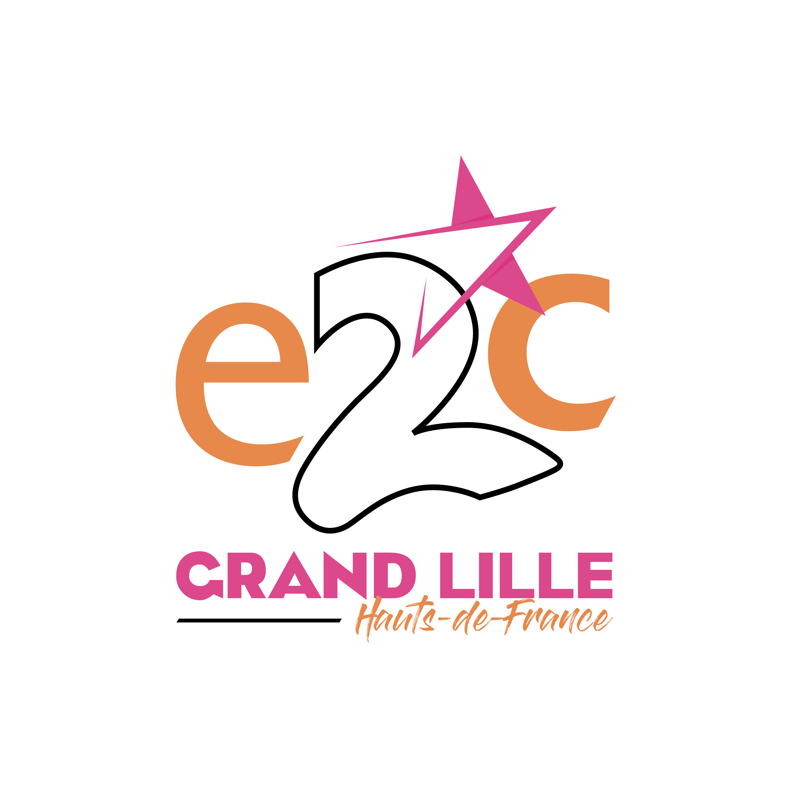

24 ans
Manutentionnaire
-Préparation des commandes en accord avec les produits
-Manipuler et déplacer manuellement ou mécaniquement des marchandises.
Médiateur social
-Accompagner les voyageurs, orienter vers les transports adaptés, répondre aux éventuelles questions, être disponible en cas de difficultés.
Accompagnement au projet professionnel - Prépa numérique
-Stages en entreprises
-Remise à niveau
-Projets collectifs
-Apprentissage de la programmation ( HMTL / CSS )
Anglais - C2
Espagnol - B1